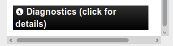

Using InaSAFE¶
This document describes the usage of the InaSAFE ‘dock panel’ - which is the main interface for running risk scenarios within the QGIS environment.
Note
In order to use the InaSAFE tool effectively, you should probably also read the Keywords System and Understand Impact Functions documentation before you get started.
The InaSAFE Dock panel is the main way to interact with the tools that are provided in InaSAFE. After you have installed the InaSAFE plugin, the dock panel will automatically load in QGIS and appear somewhere on your screen. It will look like this:
{kind=link}
Docking Panel
You can drag and drop the dock panel to reposition it in the user interface. For example, dragging the panel towards the right margin of the QGIS application will dock it to the right side of the screen.
{kind=link}
Dock on the right with loaded Project
There are 3 main areas to the panel:
- the Questions area
- the Results area
- the Buttons area
At any time you can obtain help in InaSAFE by clicking on the help buttons provided on each dock and dialog.
The Questions Area¶
The intention of InaSAFE is to make it really simple and easy to perform your impact analysis. The question area provides a simple way for you to formulate what it is you want to find out? All questions are formulated in the form:
If [hazard] how many [exposure] might [impact].
For example:
If there is a flood how many schools might be closed.
In order to answer such questions, the InaSAFE developers have built a number of impact functions that cover scenarios such as flood, tsunami, volcanic ash fall, earthquake and so on. You can read our impact function documentation to find out more information about the various Understand Impact Functions implemented.
The formulation of these questions if carried out by loading layers into QGIS that represent either hazard or exposure scenarious.
- A hazard (In the event of) may be represented as, for example, a raster layer in QGIS where each pixel in the raster represents the current flood depth following an inundation event.
- An exposure (How many) layer could be represented, for example, as vector polygon data representing building outlines, or a raster outline where each pixel represents the number of people resident in that cell.
The impact function (Might) will combine these two input layers in a mathematical model in order to postulate what the impacts of the hazard will be on the exposure infrastructure or people.
By selecting a combination from the In the event of and How many combo boxes, an appropriate set of impact functions will be listed in the Might combo box.
You may be wondering how the InaSAFE plugin determines whether a layer should be listed in the In the event of or How many combo boxes? The plugin relies on simple keyword metadata to be associated with each layer.
The keyword system is described in detail in Keywords System. Each layer that has a keyword allocating it’s category to hazard will be listed in the In the event of combo. Similarly, a category of exposure in the keywords for a layer will result in it being listed under the How many combo.
InaSAFE uses the combination of category, subcategory, units and datatype keywords to determine which impact functions will be listed in the Might combo.
The chosen impact function can be configured (if applicable) by pressing the small ellipses (...) button next to the chosen impact function.
This is explained in more detail below under Setting Analysis Parameters
As of InaSAFE 1.2, you can now also choose an aggregation layer for both raster and vector layers.
Aggregation allows you to specify an additional layer when defining the analysis criteria. This layer will be used to provide a by-area breakdown of the results of the analysis. For example if you are carrying out an analysis for a city, you can use district areas within the city to provide per-area results. In the absence of an aggregation layer, the analysis extent is used as the aggregation unit. To use this option you need to load a polygon based layer into QGIS that represents the areas you wish to summarise by.
Note
After running an analysis, the question area is hidden to maximise the amount of space allocated to the results area (see below). You can re-open the question area at any time by pressing the Show question form button.
The Results Area¶
The Results area is used to display various useful feedback items to the user. Once an impact scenario has been run (see next section below), a summary table will be shown.
{kind=link}
Processed scenario with loaded and shown results
If you select an impact layer (i.e. a layer that was produced using an InaSAFE impact function), in the QGIS layers list, this summary will also be displayed in the results area.
When you select a hazard or exposure layer in the QGIS layers list, the keywords for that layer will be shown in the Results area, making it easy to understand what metadata exists for that layer.

Showing keywords for active Layer
The Results area is also used to display status information. For example, when a suitable combination of hazard (In the event of), exposure (How many) and impact function (In the event of) are selected, the results area will be updated to indicate that you can proceed to run the impact scenario calculation. The Run Button will be activated.
{kind=link}
Activated Run button
Finally, the Results area is also used to display any error messages so that the user is informed as to what went wrong and why. You might want to scroll down a bit in the messaging window.
{kind=link}
Showing error messages
To have more space for the results available your Question is automatically hidden to make the results area as large as possible to display the results. If you want to have a look again what the question was that you formulated click on the Show question form button on top of the result area.

Show question form
If you want to hide the question again to have more space to display the results again, just make the Layer you just calculated with InaSAFE active again in the Layers list of QGIS.
Note
At the bottom of error display you may see button like the following. If you click on this button, it will display a box which will contain useful diagnostic information which can be submitted as part of a bug report if you think the error was incorrect.
{kind=link}
The Buttons Area¶
The buttons area contains three buttons:
{kind=link}
Buttons Area
- Help - click on this if you need context help, such as the document you are reading right now!
- Print... - click on this if you wish to create a pdf of your impact scenarion project or just generate report and open it in composer for further tuning. An impact layer must be active before the Print... button will be enabled.
- Run - if the combination of options in the Questions area’s combo boxes will allow you to run a scenario, this button is enabled.
Data conversions when running a scenario¶
When running a scenario, the data being used needs to be processed into a state where it is acceptable for use by the impact function. In particular it should be noted that:
- Remote datasets will be copied locally before processing.
- All datasets will be clipped to the intersection of the hazard layer, the exposure layer and the current view extents.
- All clipped datasets will be converted (reprojected) to Geographic (EPSG:4326) coordinate reference system before analysis.
Setting Analysis Parameters¶
Depending on what Impact Function you have chosen you have different options to adjust the parameters of the your question you are asking. Some Impact Functions have more configurable Options and some have less. Always depending on the Impact Function itself and the question you are going to ask.
To open the Impact Function Configuration Dialog you need to click on the ... Button next to the Might paragraph in the InaSAFE dock.
{kind=link}
Open the Impact Function Configurator
You might have up to 3 tabs visible.
- Options: Depending in the Impact function you selected, you can influence the result of your question here (the Impact Function) by setting different initial values which are presented depending on the function you choose (Some Impact functions might now be able to be influenced).
- Postprocessors: Takes the results from the impact function and calculates derivative indicators, for example if you have an affected population total, the Gender postprocessor will calculate gender specific indicators such as additional nutritional requirements for pregnant women
- Minimum Needs: If it is something that effects for eg people it works out the minimum needs of the people affected by the impact scenario. To use that function you should have the necessary data available and calculate this by using the Minimum Needs Tool.
{kind=link}
Generating impact report¶
When scenario analysis completed you may want to generate a report. Usually Print... button will be enabled immediatelly after analysis. If it still inactive, select impact layer in QGIS ToC.
To start report generation you need to click on the Print... button in the buttons area. This will open an Impact report dialog.
{kind=link}
Impact report configuration
Dialog has three major areas:
- Area to print group: allows to customize extent of the report map. There are two options available. Choose Current extent if current canvas extent represents necessary area. Analysis extent will set extent of the report map to impact layer extent.
- Template to use group: here you can select desired template for your report. In combobox listed all templates bundled with plugin plus templates from user-defined template directory (see Options for information how to set templates directory). It is also possible to select custom template from any location: just activate radiobutton under combobox and provide path to template using ... button.
- buttons area: contains four buttons. Open PDF button used to generate report and export it in PDF format. Resulting file(s) will be opened in your default PDF viewer. Open composer used when you need to adjust generated report before printing. In this case report will be opened in QGIS composer and you can edit it as needed.